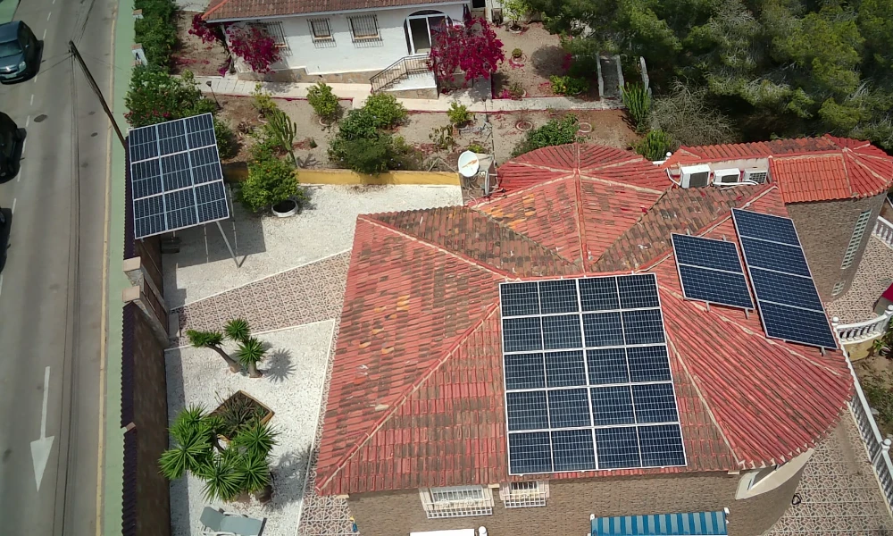
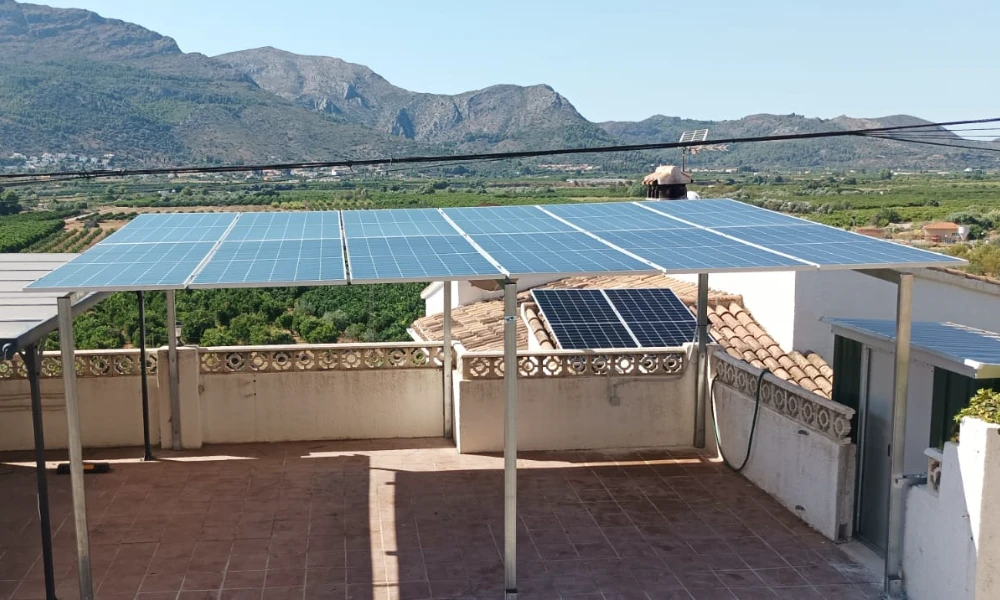
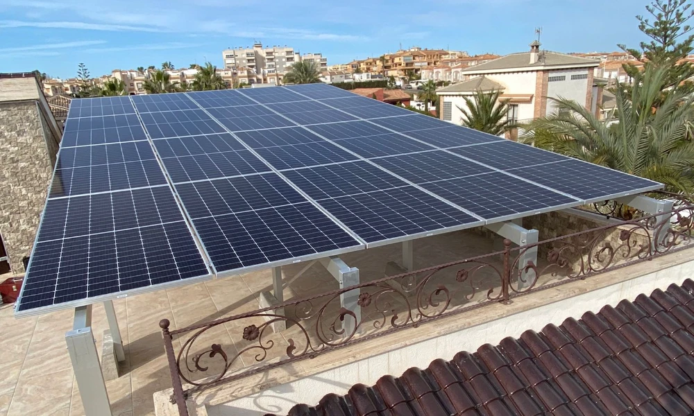
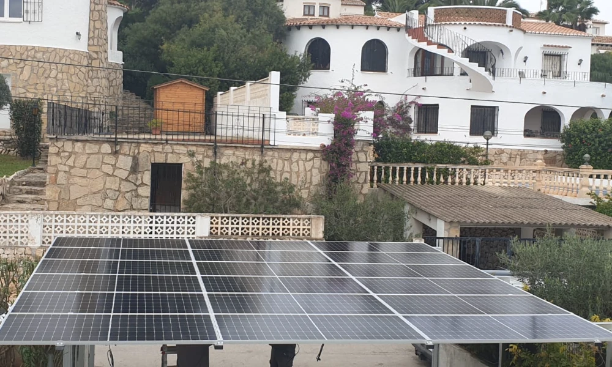
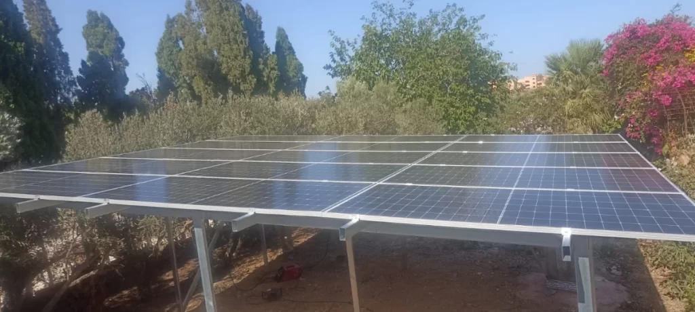

Una pérgola solar fotovoltaica es más que una simple estructura; es la combinación entre la innovación y la estética. Estas pérgolas incorporan paneles solares en su diseño, creando una fuente de energía limpia y ecológica que complementa cualquier entorno exterior. Ya tengas un extenso patio trasero o una acogedora terraza, una pérgola solar fotovoltaica añade un aura de sofisticación al tiempo que contribuye a la producción de energía sostenible.
1. Generación de Energía Renovable: Las pérgolas solares fotovoltaicas utilizan paneles solares para convertir la luz solar en electricidad, reduciendo la dependencia de fuentes de energía no renovables.
2. Atractivo Estético: Estas pérgolas están disponibles en diversos diseños, materiales y acabados, lo que te permite elegir un estilo que coincida con la decoración de tu espacio exterior.
3. Sombra y Comodidad: Mientras generan electricidad, las pérgolas también brindan sombra y protección contra el sol, creando un espacio cómodo para relajarte.
4. Incremento del Valor de la Propiedad: La integración de soluciones de energía renovable puede aumentar el valor de reventa de tu propiedad.
5. Impacto Ambiental: Al generar energía limpia, una pérgola solar fotovoltaica contribuye a un entorno más verde, mitigando el cambio climático.
Puedes ver ejemplos de grandes pérgolas solares fotovoltaicas, como la del Fórum de Barcelona
La tecnología detrás de una pérgola solar fotovoltaica se basa en células fotovoltaicas, que convierten la luz solar en electricidad a través de un proceso conocido como el efecto fotovoltaico. Estas células se integran en la estructura de la pérgola, capturando la luz solar durante el día y convirtiéndola en energía utilizable. El exceso de energía puede almacenarse en baterías para su uso durante la noche o en días nublados, garantizando un suministro continuo de energía.




Ideal para grandes fincas. Aprovecha el espacio a la vez que ahorras en tu factura de la luz
Más información
La generación de electricidad depende de factores como la capacidad de los paneles, la disponibilidad de luz solar y la ubicación geográfica. En promedio, una pérgola puede generar suficiente electricidad para alimentar un gran porcentaje del consumo de una vivienda media.
Sí, estas pérgolas se pueden personalizar para resistir diversas condiciones climáticas. Se pueden integrar características de carga de nieve y resistencia al viento para áreas con climas desafiantes. No obstante, tu pérgola solar fotovoltaica siempre funcionará mejor en climas soleados y despejados.
En muchas regiones, es posible vender el excedente de energía a la red, lo que compensa aún más tus costos de electricidad.
En general, los paneles solares requieren poco mantenimiento. La limpieza y las inspecciones ocasionales aseguran un rendimiento óptimo.
Se recomienda contratar a profesionales para la instalación para garantizar la seguridad, el cableado adecuado y una producción de energía eficiente.
- Ahorro energético y económico: Las pérgolas solares aprovechan la energía del sol para generar electricidad de manera limpia y renovable
- Aprovechamiento del espacio exterior: Una pérgola solar fotovoltaica no solo genera energía, sino que también ofrece beneficios prácticos y estéticos. Crearás un espacio al aire libre funcional y agradable que podrás utilizar para diversas actividades
- Sostenibilidad ambiental: La instalación de pérgolas solares es una forma efectiva de reducir tu huella de carbono y contribuir a la preservación del medio ambiente.